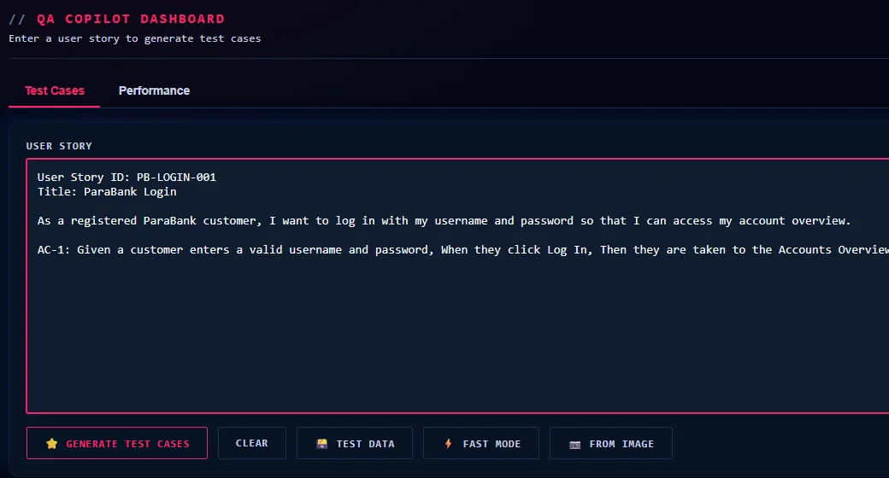

Write the story: acceptance criteria, business rules and requirements as plain text.
Private repo
AI / QA automation
QA Copilot Dashboard
Turns a plain-English user story into manual test cases and a runnable Playwright suite, runs it against a live site, and repairs broken locators when the page changes.
How it works
Generation is live: each test step is attempted in a real browser while the script is written, so every selector in the output was already proven to work rather than guessed by the model. When a locator goes missing, the runner re-scans the page and matches a replacement by meaning using sentence-transformer embeddings. The whole stack runs on a local llama3:8b model through Ollama, with no cloud API.
- Boundary Value Analysis and Equivalence Partitioning applied to numeric business rules
- Embedding-based locator healing (all-MiniLM-L6-v2) instead of exact-string matching
- Nginx access logs clustered into behaviour personas with K-Means and the elbow method, no LLM involved
- Locust load-test scripts weighted by those persona ratios
Walkthrough available on request. Screenshots are the real dashboard UI in its empty state.